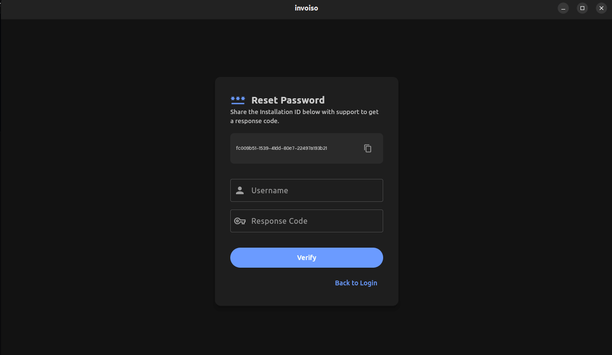

Every offline app has the same nightmare scenario: you forget your password, and because there's no cloud account behind it, there's no "reset link sent to your email" button to bail you out. For a long time, that was true of Invoiso too. If you forgot your login password, your only real option was to reinstall — and reinstalling meant either losing your invoices, customers, and product catalog, or going through a manual backup-restore dance just to get back to where you were. Invoiso v4.3.6 closes that gap. It ships a proper, self-service Forgot Password flow that lives right on the login screen, so a forgotten password is no longer a data-loss event.
Why this matters for an offline invoicing app
Invoiso is built around a simple principle: your business data stays on your machine, not on someone else's server. That's great for privacy and for working without an internet connection, but it comes with a tradeoff — the app can't silently email you a password reset link the way a cloud SaaS product can, because there's no backend account tied to your login. Any recovery mechanism has to work without assuming you're always online, and it has to avoid turning "I forgot my password" into "I have to start over."
Before v4.3.6, the practical workaround for a forgotten password was reinstalling the app and, if you were diligent about backups, restoring your data from a manual export. That worked, but it asked a lot of a small business owner who just wanted to open the app and print an invoice. The new Forgot Password flow removes that friction entirely — your installation, your database, and your settings are untouched. Only the login credential changes.
How the Forgot Password flow works
The new flow is intentionally short. It's built around two identifiers: an Installation ID that's unique to your copy of Invoiso, and a one-time response code that support generates specifically for that Installation ID. Neither one is reusable elsewhere, which keeps the recovery process both simple and safe. Here's the full sequence:
- Click "Forgot password?" on the login screen. This takes you to a dedicated recovery screen — you don't need to already be logged in anywhere to reach it.
- Copy your Installation ID. It's displayed right there on the recovery screen. This ID identifies your specific installation of Invoiso, not you personally, so there's nothing sensitive about sharing it.
- Send the Installation ID to Invoiso support. A quick message with the ID is enough for support to look up your installation and generate a recovery code tied specifically to it.
- Support sends back a one-time response code. This code is single-use and matched to the Installation ID you sent, so it can't be reused on a different machine.
- Enter the code in the app and set a new password. Once the app validates the response code against your Installation ID, you choose a new password and you're logged back in immediately.
That's the entire process. No email account to configure, no security questions to remember the answers to years later, and no waiting on a password reset link that might land in spam. It's a manual step in the middle — sending the ID to support and waiting for the code — but that manual step is exactly what makes the flow safe for an offline-first app: it puts a human checkpoint between "someone claims to have lost access" and "the password actually gets reset."

What doesn't change: your data
This is the part worth repeating, because it's the whole point of the feature: resetting your password through this flow does not touch your invoices, customers, products, or any other data stored in Invoiso. The Installation ID / response code exchange authenticates you against your own installation — it doesn't reinstall the app, doesn't reset the database, and doesn't require restoring from a backup. You finish the flow with the exact same data you had before you got locked out, just with a password you can actually remember this time.
That said, this feature is not a replacement for good backup hygiene. If you haven't already, it's still worth reading through how backup and restore works in Invoiso — password recovery protects you from a forgotten credential, but a regular backup habit protects you from hardware failure, accidental deletion, or a lost laptop.
Who this is for
If you run Invoiso as a single user, this flow is your safety net for the day you type a password that used to work and suddenly doesn't. If you manage Invoiso for a small team with multiple system users, it's just as relevant — each login can independently go through the Forgot Password flow without affecting other users' access to the same installation. Either way, the recovery process doesn't discriminate based on how the account is used day-to-day; it only cares about matching an Installation ID to a valid response code.
It's also worth calling out who this flow is not for: it's not an account-sharing or license-transfer mechanism. The Installation ID identifies a specific installation, and the response code Invoiso support issues is scoped to that installation. If you're setting up Invoiso on a new machine, that's a fresh installation, not a password reset — the two flows are separate.
A quick before-and-after
Before v4.3.6, a forgotten password meant one of two paths: dig up an old manual backup and hope it was recent, or lose your data and start fresh. Neither was a good outcome for something as ordinary as a mistyped password after a long weekend. Now, the path is: click a link, copy an ID, wait for a code, set a new password. The data risk that used to be baked into "I forgot my password" is gone.
This kind of change is small in terms of screen real estate — it's one link on the login screen and one new recovery screen behind it — but it removes a genuinely stressful failure mode for anyone running their invoicing on a single offline install. If you've been putting off updating because you didn't want to risk a forgotten password turning into a data headache, that risk is now off the table.
Why an Installation ID instead of an email address
It's fair to ask why Invoiso didn't just add an email field and send a reset link, the way most web apps do. The answer comes back to the offline-first design: Invoiso doesn't require an email address to install or use the app in the first place, and bolting one on purely for password recovery would mean asking every existing user to retroactively register an email before they could ever use the feature. It would also mean storing and syncing that email somewhere reachable from the internet, which runs against the whole point of keeping your business data local.
The Installation ID sidesteps all of that. It already exists as a stable identifier for your specific copy of Invoiso — it's the same ID used for support and licensing lookups elsewhere in the app — so reusing it for password recovery meant no new fields, no new accounts, and no new data leaving your machine except the one ID needed to look up your installation. The response code that comes back is short-lived and single-use, so even if it were somehow intercepted in transit, it can't be reused once your password has been changed.
Common questions about the new flow
A few questions come up whenever a recovery flow like this ships, so it's worth answering them directly here as well as in the FAQ section search engines pick up.
- What if I lose access to the email I used to contact support? The Installation ID lookup isn't tied to a specific email address on file — you can reach out to support from whatever email or channel is convenient at the time, since the ID itself is what gets matched, not the sender.
- Can someone else reset my password if they see my Installation ID? The ID alone isn't enough — support still issues the response code directly to whoever contacts them, and that code is what actually unlocks the reset screen. Treat the ID the way you'd treat any account identifier: not secret, but not something to broadcast either.
- What if I mistype the response code? The app validates the code against the Installation ID before letting you proceed, so a mistyped code simply fails and you can re-enter it — it won't lock the account further or invalidate the code on the first bad attempt.
- Does this replace the system users / permissions setup? No. Forgot Password only resets a login credential. If you're managing multiple logins for a team, that's still handled through system user management in Settings, separate from this recovery flow.
Troubleshooting a stuck recovery
If the Forgot Password screen doesn't show an Installation ID, or the app doesn't accept a response code you believe is correct, the most common cause is running an older build that predates v4.3.6 — the screen and validation logic for this flow only exist from that version onward. Updating to the latest release resolves this in almost every case. If you're already on v4.3.6 or later and still running into trouble, include your Installation ID and a screenshot of the error when you contact support so the issue can be diagnosed without back-and-forth.
Getting the update
Forgot Password recovery is included starting in v4.3.6. If you're on an earlier version, update through the in-app updater or grab the latest installer from the download page. The recovery flow is available immediately after updating — there's no separate setup or configuration required on your end.
Ready to try Invoiso without worrying about getting locked out? Get free GST billing software or download the desktop app.